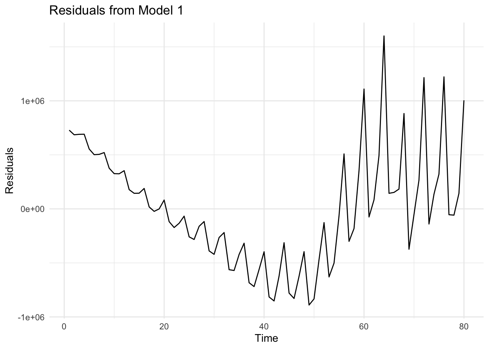
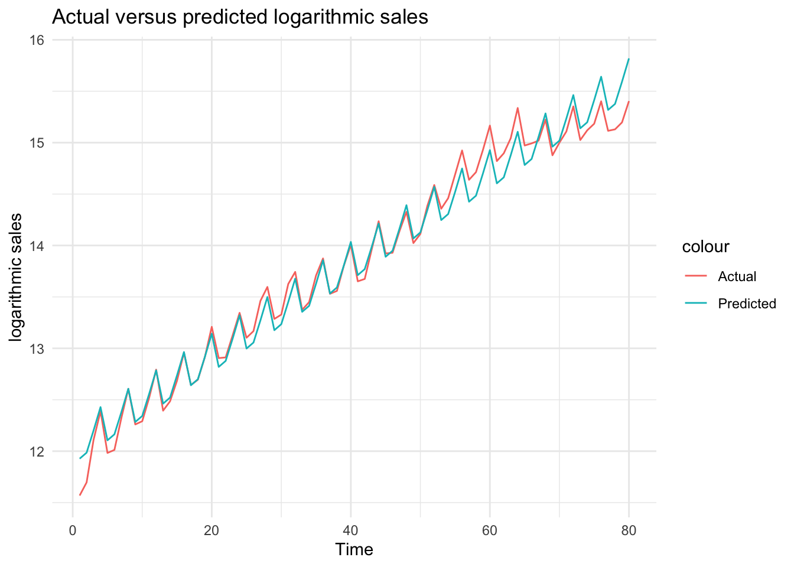

── Attaching core tidyverse packages ──────────────────────── tidyverse 2.0.0 ──
✔ dplyr 1.1.4 ✔ readr 2.1.5
✔ forcats 1.0.0 ✔ stringr 1.5.1
✔ ggplot2 3.5.1 ✔ tibble 3.2.1
✔ lubridate 1.9.4 ✔ tidyr 1.3.1
✔ purrr 1.0.2
── Conflicts ────────────────────────────────────────── tidyverse_conflicts() ──
✖ dplyr::filter() masks stats::filter()
✖ dplyr::lag() masks stats::lag()
ℹ Use the conflicted package (<http://conflicted.r-lib.org/>) to force all conflicts to become errors
library(ggplot2)library(dplyr)library(lmtest)
Loading required package: zoo
Attaching package: 'zoo'
The following objects are masked from 'package:base':
as.Date, as.Date.numeric
library(tseries)
Registered S3 method overwritten by 'quantmod':
method from
as.zoo.data.frame zoo
The GAP_Sales data that we will be using in this session is obtained from (Wilson and Keating 2007). It shows the sales figures of GAP.
7.1.1 Task 1
Start a new project in R and name it as GAP-sales-analysis. Import GAP_Sales.csv data into this project. GAP_Sales is a quarterly time series data covering time period 1985:Q1 to 2004:Q4. In this example, we would like to estimate a regression model explaining sales of GAP.
7.1.1.1 Guidance
Use the menu import GAP_Sales.csv file into R. You need to choose From Text (base) because csv is a text format. The GAP_Sales data we have is comma separated, but you may encounter a different form of separation, for example, tab or semi-column. In the opening window, give a name for your data frame under the Name field and remember to check the Heading as Yes because we have variable names in the first row of the csv file. Also, note the strings as factors option, which asks R to import text-based content (variables) as categorial (factor is the terminology R uses).
GAP_Sales data is a quarterly data. However, R would not recognise this until we tell it that is a quarterly time series. R has a built-in time series class, ts for basic data manipulation. Some other popular packages (more advanced than the ts in base R) include tseries and zoo.
As (Kleiber and Zeileis 2008) explains, ts is aimed at regular series observed in annual, quarterly, and monthly intervals. Time series objects can be created by supplying the data along with the arguments start, end, and frequency. The data can be:
a numeric vector (a single variable), or
a matrix (including a set of variables).
It includes time-series specific methods such as lag() (for the lagged values of the variables) and diff() (for time differencing the variable).
Sales is the variable we are interested in our data. So, let us start by introducing a time dimension to that series. In the code below, we create a single numeric vector, gap_sales_ts by defining the start date and the frequency of the Sales variable. Our variable starts from the first quarter of 1985 with a frequency of 4 (it is a quarterly data, repeating every 3 months).
gap_sales_ts <-ts(df$Sales, start =c(1985, 1), frequency =4)
R’s basic plot function will give us the following:
plot(gap_sales_ts)
You may add labels and color with some additional options:
plot(gap_sales_ts, col ="blue", lwd =2, xlab ="Year", ylab ="Sales", main ="Quarterly Sales of GAP")
You may also use ggplot to plot the Sales data:
ggplot(df, aes(x = Time, y = Sales)) +geom_line(color ="blue", size =1) +theme_minimal()
Warning: Using `size` aesthetic for lines was deprecated in ggplot2 3.4.0.
ℹ Please use `linewidth` instead.
In the above plot, although we can see the pattern of the Sales variable quite clearly, the Time variable labels fail to show us the respective quarter values. We may change these labels by using the following lines of code.
We first define labels to correspond to each data point
# First, create a new column for formatted quarter labelsdf$Quarter_label <-paste0(df$Year, ":", df$quarter)# You can achieve the same as above using the code below: # (note that you do not need this once you create Quarter_Label above )df$Quarter_label_v2 <-with(df, paste(Year, quarter, sep =":"))
Check the values of Quarter_label in the df. You will see that it goes on like 1985:q1, 1985:q2, and so on. We may now use these labels instead of the values of the Time variable.
ggplot(df, aes(x = Time, y = Sales)) +geom_line(color ="blue", size =1) +scale_x_continuous(breaks = df$Time, # Position the breaks at each quarter, i.e. at each value of Timelabels = df$Quarter_label # Label each point using Quarter_label variable created above ) +# provide a title and axes labels belowlabs(title ="Quarterly GAP Sales", x ="Quarter", y ="Sales") +theme_minimal() +theme(axis.text.x =element_text(angle =90, size=6)) # Rotate labels for better readability using the angle option and set the font size for label using size option
Looking at this plot, what can you say about the sales figures over time? What kind of time-series characteristics it reveals?
We can see above that the gap sales have some repeating fluctuations around a positive trend. The trend is not linear. The regression that we estimate should capture this non-linear trend as well as the seasonal fluctuations.
The following tasks will take us to the best fit possible with the available data.
7.1.4 Task 4
Fit a linear trend line to the Sales variable.
a. Provide an interpretation of the slope coefficient.
b. Check how well this model fits the data by plotting the predictions of the model and the observed values against time.
c. Plot the residuals of this model and explain whether or not you see a pattern.
7.1.4.1 Guidance
The Time variable will be used to fit a linear trend to Sales. The Time variables takes values from 1 to 80, increasing by 1 in each data point (quarter).
# Fit a linear trend line to Sales datamodel_1 <-lm(Sales ~ Time, data = df)summary(model_1)
Call:
lm(formula = Sales ~ Time, data = df)
Residuals:
Min 1Q Median 3Q Max
-889709 -390551 -60886 325202 1600763
Coefficients:
Estimate Std. Error t value Pr(>|t|)
(Intercept) -680044 121435 -5.60 3.08e-07 ***
Time 57162 2605 21.95 < 2e-16 ***
---
Signif. codes: 0 '***' 0.001 '**' 0.01 '*' 0.05 '.' 0.1 ' ' 1
Residual standard error: 538000 on 78 degrees of freedom
Multiple R-squared: 0.8606, Adjusted R-squared: 0.8588
F-statistic: 481.6 on 1 and 78 DF, p-value: < 2.2e-16
Time variable takes values starting from 1 and increasing by 1 in each quarter. Including this variable will allow us to fit a trend to sales.
Interpretation of the coefficient of Time variable: In each quarter, the GAP sales increases by $57,162 thousand, on average (note that in the data, Sales is measured in thousand dollars)
We can use R’s base time series plot but we will need to convert the predictions into a time series. Alternatively, ggplot is easier to use.
# Plot actual versus predicted Salesggplot(df, aes(x = Time)) +geom_line(aes(y = Sales, color ="Actual")) +geom_line(aes(y= sales_hat_m1, color ="Predicted")) +theme_minimal() +labs(title ="Actual versus Predicted Sales", x ="Time", y ="Sales")
We can see above that although we could estimate the trend roughly, it is not a perfect fit. Sales has a positive trend, it is not linear. We will be using natural logarithm of sales below.
Below, we save and plot the residuals from model_1
# Save residuals from model_1df$residuals_m1 <-residuals(model_1)# Residual plotggplot(df, aes(x = Time, y = residuals_m1)) +geom_line() +theme_minimal() +labs(title ="Residuals from Model 1", x ="Time", y ="Residuals")

When we look at the plot of residuals, we can see that the deviations from the linear trend (i.e. the non-linearities and the fluctuations) are reflected in residuals.
7.1.5 Task 5
Replicate the same analysis using logarithm of Sales
7.1.5.1 Guidance
We start by taking the logarithm of Sales variable.
Plot logarithmic sales. Let’s first do this base R’s time series plot. We start by converting our ln_sales into quarterly time series, and then use the plot() function. lwd option below sets the line width of the plot. Change the color and the lwd values and see what you get.
# Plot of logarithmic sales (first approach - convert to time series)ln_sales_ts <-ts(df$ln_sales, start =c(1985, 1), frequency =4) # covenrt the ln_sales into time seriesplot(ln_sales_ts, col ="purple", lwd =2, xlab ="Year", ylab ="Logarithmic Sales", main ="Quarterly LogarithmicSales of GAP")
We may also use ggplot for the same purpose
# Plot of logarithmic sales (second approach - use ggplot)ggplot(df, aes(x = Time, y = ln_sales)) +geom_line() +theme_minimal() +labs(title ="Logaritmic Sales", x ="Time", y ="Logarithmic sales")
Fit a trend line to logarithmic sales
# Fit a trend line to logarithmic salesmodel_2 <-lm(ln_sales ~ Time, data = df)summary(model_2)
Call:
lm(formula = ln_sales ~ Time, data = df)
Residuals:
Min 1Q Median 3Q Max
-0.4883 -0.1559 -0.0026 0.1684 0.4589
Coefficients:
Estimate Std. Error t value Pr(>|t|)
(Intercept) 12.011834 0.046964 255.76 <2e-16 ***
Time 0.044919 0.001007 44.59 <2e-16 ***
---
Signif. codes: 0 '***' 0.001 '**' 0.01 '*' 0.05 '.' 0.1 ' ' 1
Residual standard error: 0.2081 on 78 degrees of freedom
Multiple R-squared: 0.9623, Adjusted R-squared: 0.9618
F-statistic: 1988 on 1 and 78 DF, p-value: < 2.2e-16
Both the intercept and slope coefficients are statistically significant (with very low p-values). Slope coefficient this time shows that in each quarter, sales increase by around 4.5%, on average.
Let’s now plot the predictions from this model with the actual ln_sales figures
# Obtain predictions from the logarithmic modeldf$ln_sales_hat_m2 <-predict(model_2)# Plot actual versus predicted log salesggplot(df, aes(x = Time)) +geom_line(aes(y = ln_sales, color ="Actual")) +geom_line(aes(y = ln_sales_hat_m2, color ="Predicted")) +theme_minimal() +labs(title ="Actual versus predicted logarithmic sales", x ="Time", y ="logarithmic sales")
What do you think about this fit?
We can see above that using a logarithmic transformation helped to obtain a better fit for sales.
Note that although it is very tempting to use \(R^2\) to compare the goodness-of-fit of these two models (with and without the logarithmic transformation), we cannot do that as \(R^2\) cannot be used to compare models with different dependent variables.
Let’s check what the residuals from the above estimation look like
# Residuals from model_2df$residuals_m2 <-residuals(model_2)# Plot residuals from model_2ggplot(df, aes(x = Time, y= residuals_m2))+geom_line() +theme_minimal() +labs(title ="Residuals from model 2", x ="Time", y ="Residuals")
We can see that the residuals repeatedly fluctuate in certain intervals. This is due to the seasonality in the sales data. We will be using quarter dummies to control for the seasonality.
In comparison to the previous regression specification, residuals do not reveal a trend (because by fitting a trend on the logarithmic data, we have controlled for the non-linear trend.
7.1.6 Task 6
Do you have any suggestions to improve the fit of this model?
7.1.6.1 Guidance
Check the residual plot above. Do you see a specific pattern? What can we do to capture the fluctuations that you see?
7.1.7 Task 7
Add quarter dummies to the model you estimated above.
a. Interpret the coefficients in this model.
b. Check how well this model fits the data by plotting the predictions of the model and the observed values against time.
c. Plot the residuals of this model and explain whether or not you see a pattern.
d. Does the inclusion of the quarter dummies improve the fit of the model? Test for the joint significance of the quarter dummies.
e. If you were to choose one the models that you have estimated using the GAP sales data, which one would you choose? Why?
7.1.7.1 Guidance
The quarter dummies that we need for this model are already in the data: Q2, Q3, Q4. If these were not in the data, we could create them using the ifelse() function. This is provided below
We could also use the dplyr package (note that I assign different names to these variables to be able to differentiate alternative ways of creating the dummies. You may choose a name of your own):
Check the values of these newly created dummies (quarter1, quarter2, quarter3, and quarter4) in the data.
We can now estimate the model including these quarter dummies together with a linear trend
# Estimate the model using trend and quarter dummiesmodel_3 <-lm(ln_sales ~ Time + quarter2 + quarter3 + quarter4, data = df)summary(model_3)
Call:
lm(formula = ln_sales ~ Time + quarter2 + quarter3 + quarter4,
data = df)
Residuals:
Min 1Q Median 3Q Max
-0.41512 -0.06014 -0.00347 0.09422 0.23885
Coefficients:
Estimate Std. Error t value Pr(>|t|)
(Intercept) 11.882418 0.042709 278.219 < 2e-16 ***
Time 0.044620 0.000707 63.110 < 2e-16 ***
quarter2 0.013792 0.046130 0.299 0.765783
quarter3 0.184808 0.046146 4.005 0.000145 ***
quarter4 0.367414 0.046173 7.957 1.44e-11 ***
---
Signif. codes: 0 '***' 0.001 '**' 0.01 '*' 0.05 '.' 0.1 ' ' 1
Residual standard error: 0.1459 on 75 degrees of freedom
Multiple R-squared: 0.9822, Adjusted R-squared: 0.9812
F-statistic: 1032 on 4 and 75 DF, p-value: < 2.2e-16
There are 4 quarters in a year. Quarter 1 is excluded from the model. This is the reference category. Our interpretation of the other quarter dummies will be in reference to the excluded category. Looking at the p-values, Q3 and Q4 are statistically significant while Q2 is statistically insignificant. Statistical insignificance implies that sales in quarter 2 are not different than sales in quarter 1. In other words, average sales in the first 2 quarters are around the same level.
A rough interpretation of the Q3 and Q4 coefficients would be as follows (note that this approach could be reliable only when the effects (i.e. the coefficients) are very small)
Holding everything else constant, sales in quarter 3 (i.e. in months July-August- September) are around 18.5% higher than sales in quarter 1 (i.e. in comparision to sales in the first 3 months of the year.
Holding everything else constant, sales in quarter 4 (i.e. in months October- November-December) are around 36.7% higher than sales in quarter 1 (i.e. in comparison to sales in the first 3 months of the year.
For a more precise interpretation of dummy variable coefficients in a logarithmic dependent variable model, we need to transform the estimated coefficients first:
\[
[exp(0.1848)-1] \times 100 = 20.30
\]
\[
[exp(0.3674)-1] \times 100 = 44.40
\]
Holding everything else constant, sales in quarter 3 (i.e. in months July-August- September) are around 20.30% higher than sales in quarter 1 (i.e. in comparison to sales in the first 3 months of the year
Holding everything else constant, sales in quarter 4 (i.e. in months October- November-December) are around 44.40% higher than sales in quarter 1 (i.e. in comparison to sales in the first 3 months of the year.
Please note that this transformation is applied only when the dependent variable is in logarithmic form and if we are commenting on the effect of a dummy variable.
Are these quarterly dummies contributing to the explanatory power of the model? In other words, are they jointly statistically significant? We can check this using an F-test for restrictions. This could be done using the anova function in R.
Below are the steps we follow to test for the restrictions:
Estimate the full (unrestricted) model. We have done that above. It is saved under model_3.
Estimate the restricted model where quarter dummy coefficients take value zero. This is in fact, our model_2 above.
Perform an F-test to compare the restricted and unrestricted models using anova() :
anova(restricted_model, unrestricted_model)
# Perform an F-testanova(model_2, model_3)
Analysis of Variance Table
Model 1: ln_sales ~ Time
Model 2: ln_sales ~ Time + quarter2 + quarter3 + quarter4
Res.Df RSS Df Sum of Sq F Pr(>F)
1 78 3.3767
2 75 1.5956 3 1.7811 27.906 3.17e-12 ***
---
Signif. codes: 0 '***' 0.001 '**' 0.01 '*' 0.05 '.' 0.1 ' ' 1
The null hypothesis in the above test is that the coefficients of quarter dummies are jointly equal to zero versus the alternative that at least one is different than zero. We have a very small p-value. Hence we reject the null hypothesis and conclude that the quarter dummies are jointly statistically significant.
Let’s plot the actual values against predictions to see the improvement by the inclusion of the quarter
# Obtain predictions from model_3df$ln_sales_hat_m3 <-predict(model_3)# Plot actual versus predicted log salesggplot(df, aes(x = Time)) +geom_line(aes(y = ln_sales, color ="Actual")) +geom_line(aes(y = ln_sales_hat_m3, color ="Predicted")) +theme_minimal() +labs(title ="Actual versus predicted logarithmic sales", x ="Time", y ="logarithmic sales")

We can see from the plot that the regression model now have a better fit to the actual data. All fluctuations are captured by quarter dummies.
And finally, let’s have a look at the residuals
# Residuals from model_2df$residuals_m3 <-residuals(model_3)# Plot residuals from model_2ggplot(df, aes(x = Time, y= residuals_m3))+geom_line(color ="purple") +theme_minimal() +labs(title ="Residuals from model 3", x ="Time", y ="Residuals")
Among the 3 models estimated, we would choose the last one because it has a better fit than the others. In addition to the checks we have done above, you could also compare the residual sum of squares to see which one fits better. But please note that if you follow that approach, you will need to make these values comparable. For example, in this case, take the anti-log of residuals from the regressions that use logarithmic sale.
7.1.8 Task 8
Conduct the conventional misspecification tests on the last model estimated.
7.1.8.1 Guidance
We may start with the normality of the residuals. For this test, we will be using the jarque.bera.test() from the tseries package.
# Normality of residualsjarque.bera.test(df$residuals_m3)
Jarque Bera Test
data: df$residuals_m3
X-squared = 6.4227, df = 2, p-value = 0.0403
The null hypothesis of normal distribution is rejected at 5% significance level.
For the tests that follow, we will using the lmtest package.
Autocorrelation Test
We use the bgtest() function below. It performs the Breusch-Godfrey Test. We first test for the first order autocorrelation and then, because we have quarterly data, the existence of autocorrelation up to order 4.
# Autocorrelationbgtest(model_3)
Breusch-Godfrey test for serial correlation of order up to 1
data: model_3
LM test = 60.429, df = 1, p-value = 7.628e-15
bgtest(model_3, order =4)
Breusch-Godfrey test for serial correlation of order up to 4
data: model_3
LM test = 62.487, df = 4, p-value = 8.703e-13
There is autocorrelation problem in our model.
Heteroscedasticity
We will use bptest() function for heteroscedasticity. It performs the Breusch-Pagan Test.
# Heteroscedasticitybptest(model_3)
studentized Breusch-Pagan test
data: model_3
BP = 9.4108, df = 4, p-value = 0.05161
The null of no heteroscedasticity cannot be rejected at 5% significance level.
The estimated model suffers from autocorrelation, heteroscedasticity, functional misspecification, and a structural break at the third quarter of 2001. Also, the residuals are non-normally distributed.
Please see your textbook for explanations of possible implications of each of these misspecification.
7.1.9 Task 9
Using the last model, forecast the sales value for each quarter of 2005.
7.1.9.1 Guidance
There are more advanced ways of producing forecasts in R. But we need at this stage is explained below.
Define a forecast_2005 function using the coefficients of model_3. Let us see what model_3 coefficients are
summary(model_3)
Call:
lm(formula = ln_sales ~ Time + quarter2 + quarter3 + quarter4,
data = df)
Residuals:
Min 1Q Median 3Q Max
-0.41512 -0.06014 -0.00347 0.09422 0.23885
Coefficients:
Estimate Std. Error t value Pr(>|t|)
(Intercept) 11.882418 0.042709 278.219 < 2e-16 ***
Time 0.044620 0.000707 63.110 < 2e-16 ***
quarter2 0.013792 0.046130 0.299 0.765783
quarter3 0.184808 0.046146 4.005 0.000145 ***
quarter4 0.367414 0.046173 7.957 1.44e-11 ***
---
Signif. codes: 0 '***' 0.001 '**' 0.01 '*' 0.05 '.' 0.1 ' ' 1
Residual standard error: 0.1459 on 75 degrees of freedom
Multiple R-squared: 0.9822, Adjusted R-squared: 0.9812
F-statistic: 1032 on 4 and 75 DF, p-value: < 2.2e-16